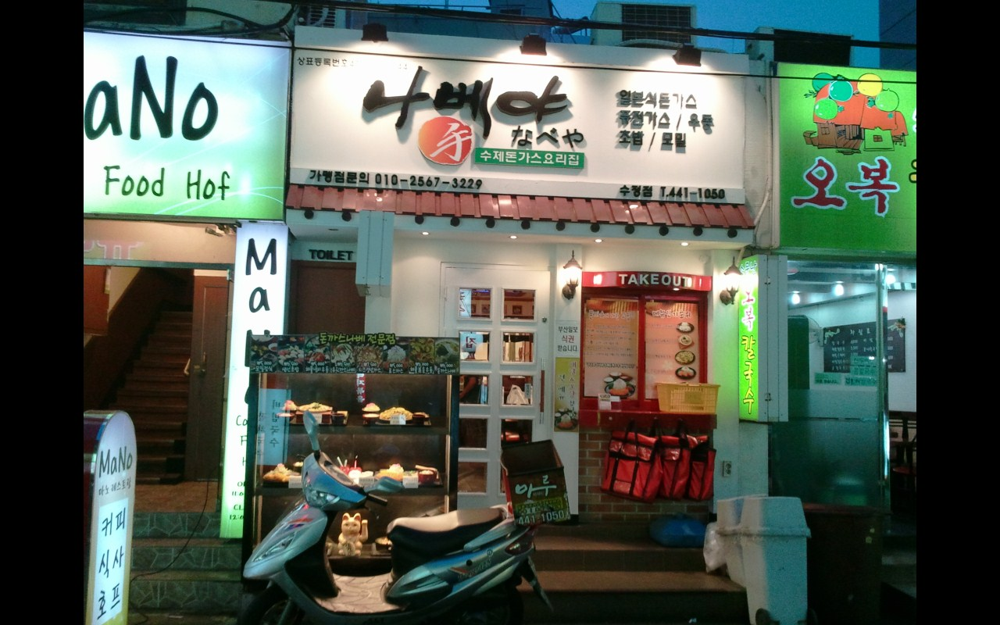
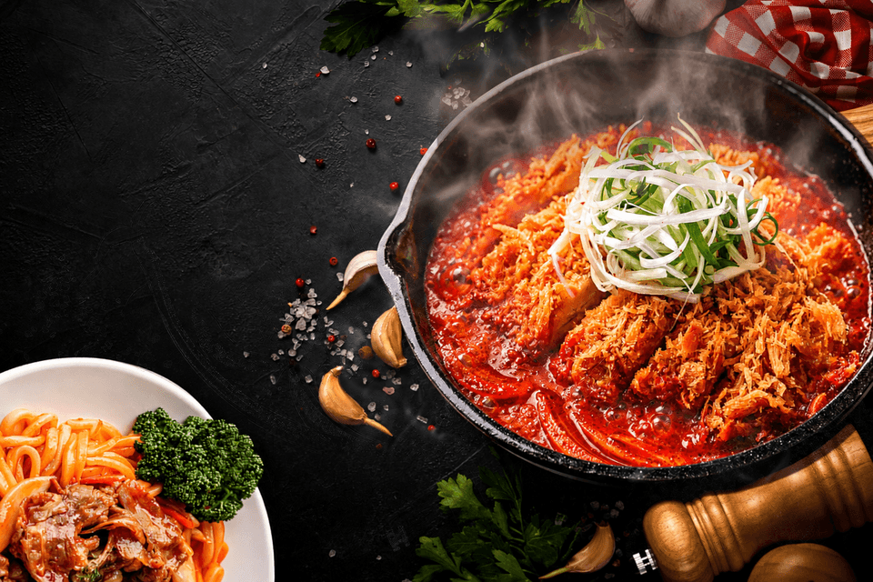
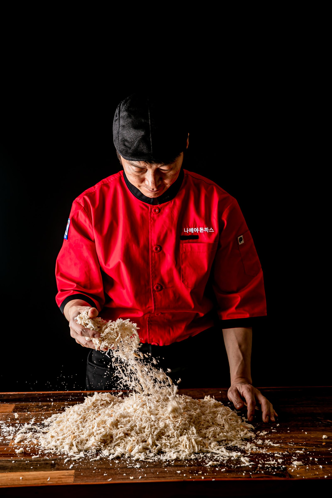
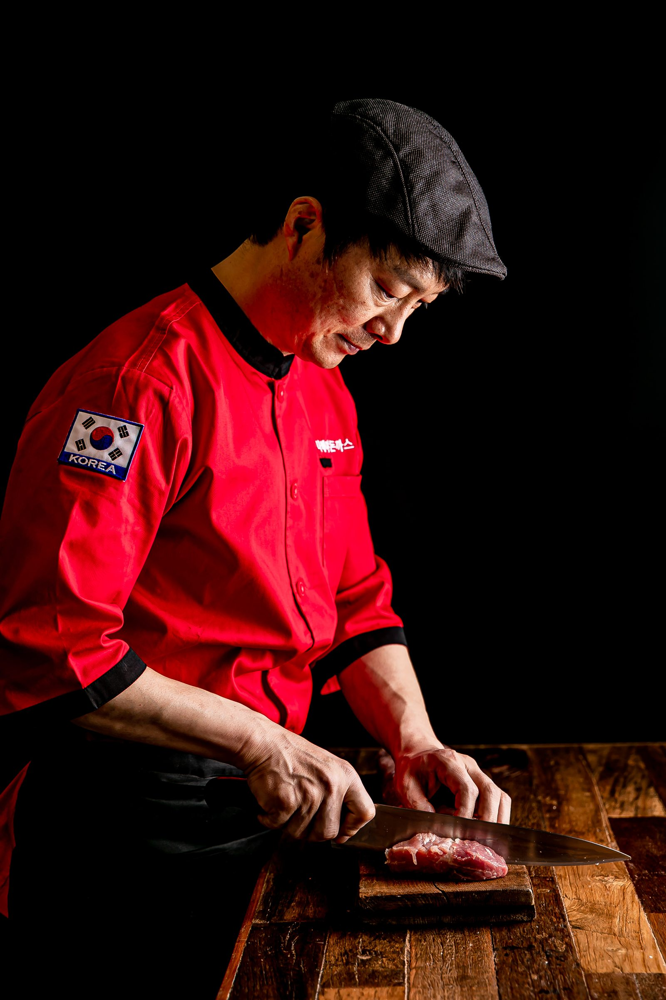
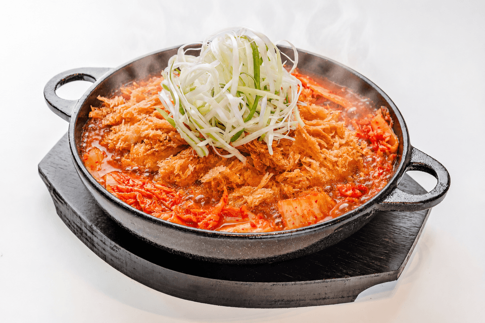

CHAPTER 01
메뉴가 만든 이름, 나베야.
작은 가게 앞에 기다리는 손님이 늘었고, 이웃 음식점 사장님이 가맹점 1호점 점주가 됐습니다. 매출의 절반 이상을 차지한 나베가 브랜드의 이름이 되었습니다.가장 많이 팔린 나베가 브랜드의 이름이 됐습니다.

SINCE 2004
나베야는 어떻게
23년 동안 살아남았을까요?
경쟁하지 않겠습니다.독점하겠습니다.
01 · THE ORIGIN
8.5평 작은 가게에서 시작한 나베야는 맛을 우연에 맡기지 않았습니다.8.5평에서 시작된 23년의 집요함.

작은 가게 앞에 기다리는 손님이 늘었고, 이웃 음식점 사장님이 가맹점 1호점 점주가 됐습니다. 매출의 절반 이상을 차지한 나베가 브랜드의 이름이 되었습니다.가장 많이 팔린 나베가 브랜드의 이름이 됐습니다.


02 · REAL REVIEW
광고 문구가 아닙니다. 나베야에 도착한 실제 고객 리뷰입니다.나베야에 도착한 실제 리뷰입니다.


나베야가 23년 동안 살아남은 이유는압도적인 재방문율 때문입니다.
실제 고객이 남긴 리뷰 화면입니다.일부 이미지는 가독성을 위해 화면을 잘라 사용했습니다.
03 · REORDER RATE
배민 매니저도 처음 본 숫자
고객 10명 중 6명 이상이
다시 주문했습니다.
한 번의 주문을 매출로 끝내지 않습니다.다음 주문으로 이어지는 맛을 만듭니다.
※ 나베야 부산본점 배달의민족 파트너 관리 보고서 기준
(조회 기간: 2026.06.15~2026.07.15 · 동일 지역 돈까스·회·일식 업종 비교)
04 · DAILY TONKATSU
나베야에는 일주일 내내 찾아오는 고객이 있습니다.일주일 내내 찾는 손님이 있습니다.
바삭한 돈까스에 깊고 시원한 김치 국물을 더했습니다. 한 번의 유행보다 자주 생각나는 한 끼를 만들었습니다.바삭한 돈까스에 시원한 김치 국물.
자주 생각나는 한 끼를 만들었습니다.

05 · SIGNATURE MENU


06· THE NABEYA STANDARD
화려한 기교보다 기본.좋은 재료와 정성으로 맛을 완성합니다.
23년 전 일본 나가사키 장인에게
전수받은 핵심 소스.한국인의 입맛에 맞게 다듬고 또 다듬어
지금의 나베야 전용 소스로 완성했습니다.
07 · ACTUAL POS DATA
숫자를 잘못 본 게 아닙니다.
2개 중 1개가 평창김치나베였습니다.
시그니처가 주문을 만들고,※ 2026년 1월 16일 나베야 서초직영점테이블 이용 건수 및 POS 판매자료 기준
08 · SERVICE SPEED
평창김치나베 1인분, 나오는 시간은?
점심시간에는 주문과 동시에 준비해 늦어도 1~3분 이내 제공합니다.주문 후 1~3분 이내 제공합니다.
09 · BUSINESS ECONOMICS
사업은 매출이 아니라 구조입니다.
팔수록 남을 수 있는 원가 구조
고객이 먼저 찾는 대표 메뉴
피크타임을 놓치지 않는 속도
팔수록 남고, 고객이 찾고, 빠르게 회전하는 구조.
10 · DELIVERY ECONOMICS
나베야는 배달을 포기하지 않았습니다.
돈이 되는 구조를 만들었습니다.돈이 되는 배달 구조를 만들었습니다.
배달매출21,813,083원
식재료 원가− 6,543,925원
포장비− 2,883,585원
배달수수료− 8,601,736원
배달손익3,783,837원
배달도 결국 구조입니다.
※ 2026년 6월 나베야 서초직영점 결산자료 기준
11 · BRAND CONVERSION
타 브랜드를 운영하던 점주들이기존 매장을 나베야로 바꿨습니다.
새로 창업한 점주들의 이야기가 아닙니다.
이미 장사의 현실을 경험한 점주들이 내린 결정입니다.신규 창업이 아닙니다.장사의 현실을 아는 점주들의 선택입니다.
장사를 해본 점주는
화려한 말보다 실제 운영 구조를 봅니다.
12 · REAL OPERATION
지금 시대에 사장 없이 돌아가는 외식 매장이 정말 가능할까요?
반복 업무는 줄이고,부부·동업 창업에도 맞는 소형 매장 운영을 설계합니다.
조리부터 서비스와 운영까지 전 과정을 익힙니다.
본사 AI 전문팀이 사람이 반복하는 업무를 줄여 인건비 부담을 낮춥니다.
13 · SITE ANALYSIS
데이터로 찾고, 경험으로 검증합니다.
14 · HQ MARKETING SUPPORT
오픈할 때 한 번으로 끝나는 지원이 아닙니다.
개업 전부터 오픈 이후까지 함께합니다.개업 전부터 오픈 이후까지
계속 지원합니다.
네이버 플레이스 · 구글 비즈니스 프로필 · 카카오맵 · 티맵
네이버 광고 · 구글 검색광고 · 구글 GDN
메타 광고 · 당근 광고
※ 800만원 상당 지원 금액은 광고대행사 1년치 대행 비용 기준입니다.
BRAND CREATIVE
포스터·입간판·SNS·배달앱·매장 모니터 콘텐츠를 제공합니다.


15 · 23 YEARS OF LEARNING
맛에서 시작해 소스, 프랜차이즈 시스템, 상권과 밥 한 톨의 기준까지 배움을 멈추지 않았습니다.맛·소스·운영·상권까지,
본사가 먼저 배우고 검증합니다.


※ 개인정보 보호를 위해 생년월일 등 일부 항목은 가려서 게시했습니다.
16 · OPENING GUIDE
창업비용과 로열티는 상담 전에 확인할 수 있도록 공식 기준으로 안내합니다.상담 전에 공식 비용부터 확인하세요.
※ 인테리어 평당 200만원 기준. 부가세, 보증금·권리금·월세, 테이블오더기, 철거·소방·가스·전기 승압·냉난방 등 점포별 공사는 별도입니다. 서울·경기 외 지역은 10%, 제주는 20% 할증될 수 있습니다. 최종 조건은 계약 전 정보공개서와 견적서를 확인해 주세요.
17 · Q&A
더 궁금한 내용은 1668-5236으로 문의해 주세요.
15평 기준 가맹 개설비 1,300만원과 점포 개설비 8,250만원을 합해 9,550만원입니다. 부가세와 점포 임차비용은 별도이며 실제 준비 자금은 상권과 점포 상태에 따라 달라집니다.
공식 창업비용은 15평 기준으로 안내하며 12평 소형 매장도 상담할 수 있습니다. 실측 후 최종 운영 동선과 견적을 제안합니다.
매출과 무관하게 월 50만원 정액이며 부가세는 별도입니다.
본사 교육 5일과 현장 교육 5일로 총 10일간 조리·서비스·운영 전 과정을 익힙니다.
가능합니다. 현재 점포의 설비와 동선, 상권을 확인해 활용 가능한 부분과 교체가 필요한 부분을 구분해 안내합니다.
NABEYA · OPENING SOON
상권은 조기 마감될 수 있습니다.
내 지역 상권 확인하기NABEYA · 100% 국산

100% 우리 농산물로 만들었습니다
대한민국 식품명인 제100호 정민서
HACCP 인증 제조시설
좋은 재료는 숨길 필요가 없습니다
평창김치나베 보기